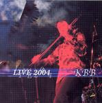

Home Artist links Label link

KBB - Live 2004
| Artist: | KBB |
| Title: | Live 2004 |
| Label: | Poseidon PRF-025 |
| Length(s): | 72 minutes |
| Year(s) of release: | 2005 |
| Month of review: | [03/2006] |
Line up
Akihisa Tsuboy - violin
Toshimitsu Takahashi - keys
Dani - bass
Shirou Sugano - drums
Tracks
| 1) | Discontinuous Spiral | 8.45
|
| 2) | Inner Flames | 11.55
|
| 3) | Shironiji | 13.01
|
| 4) | I Am Not Here | 10.51
|
| 5) | Horobi No Kawa | 6.47
|
| 6) | Nessa No Kioku | 10.39
|
| 7) | Hatenaki Shoudou | 9.34
|
Summary
The music
KBB float on Tsuboy's -electric sounding- violin. At times serious to the point of grave, at others happy and fast paced, almost with a gypsy or folky heart. The able bass & drums support him to the full. The keys also often take the leading role, be they synthy or organ-ic. The sound is energetic and lush, thus creating the sort of buzz that keeps the listeners attention. Despite this the band (generally) refrain from losing themselves in lengthy solos or meanderings, focusing on melodic development. The music is jazzrock oriented, without fully being that. Jean-Luc Ponty (due to the violin) would be the most likely reference, although Al DiMeola comes to mind too.
Shironiji is a slower track, with a romantic basis. After the mid section interval the track picks up some speed. I Am Not Here has a lot of dramatic expression, adding classical influences, but as it progresses it regresses into freaky piano doodling. Remarkably enough, though, it does return with an emotion laden climax. A brief spurt of such Chopin freakiness is repeated in Nessa No Kloku.
Conclusion
KBB perform well in creating the sort of tension and variation to keep the attention on instrumental music over such a long period of time. Still, 70+ minutes is a long stretch, which does start to tell somewhere past the halfway mark, especially if this stuff isn't quite your cup of tea. And that would really be my main criticism of this disc. 40 to 45 minutes would suffice. But since this is no concept disc you might freely program a couple of tracks and enjoy those without overdosing yourself like I did upon reviewing the disc.
© Roberto Lambooy